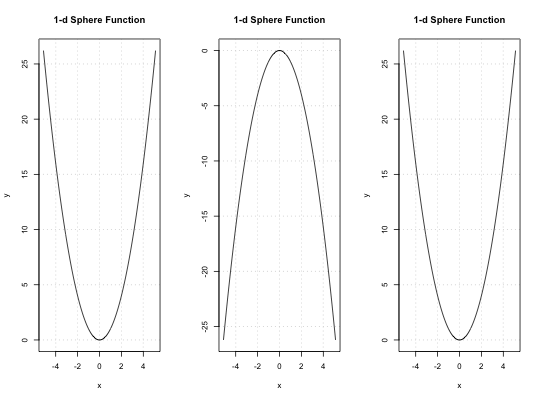

We can minimize f by maximizing -f. The majority of predefined objective functions
in smoof should be minimized by default. However, there is a handful of
functions, e.g., Keane or Alpine02, which shall be maximized by default.
For benchmarking studies it might be beneficial to inverse the direction.
The functions convertToMaximization and convertToMinimization
do exactly that keeping the attributes.
convertToMaximization(fn) convertToMinimization(fn)
| fn | [ |
|---|
[smoof_function]
Both functions will quit with an error if multi-objective functions are passed.
# create a function which should be minimized by default fn = makeSphereFunction(1L) print(shouldBeMinimized(fn))#> [1] TRUE# Now invert the objective direction ... fn2 = convertToMaximization(fn) # and invert it again fn3 = convertToMinimization(fn2) # Now to convince ourselves we render some plots opar = par(mfrow = c(1, 3)) plot(fn) plot(fn2) plot(fn3)par(opar)